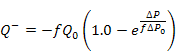

CONTAM implements the self-regulating vent as described in [Axley 2001]. This element limits the airflow rate in both directions through a flow path with user-defined limiting air pressure differences.
Flow is calculated based on the following equations for positive and negative pressure differences across the element. The positive flow direction is set for each airflow path.

Name: Enter the name you want to use to identify the airflow element. The airflow element will be saved within the current project and can be associated with multiple airflow paths.
Maximum Flow Rate (Q0): an empirical value that sets the maximum airflow rate that will be allowed to pass through the airflow path.
Regulating Pressure (DP0): an empirical value that represents the approximate pressure difference above which the airflow will be limited to the maximum flow rate Q0.
Reverse Flow Fraction (f): the fraction of the Maximum Flow Rate to which the airflow through this element will be limited when the pressure difference is negative across the airflow path.
Description: You can provide a more detailed note to describe this airflow element.